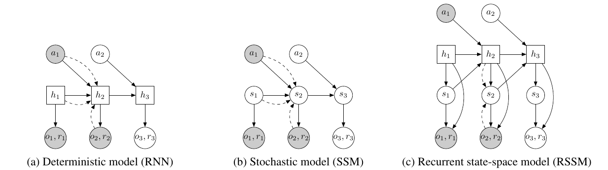
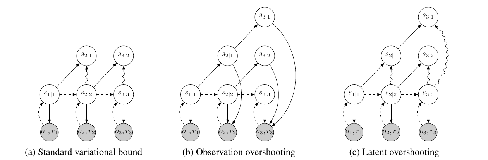
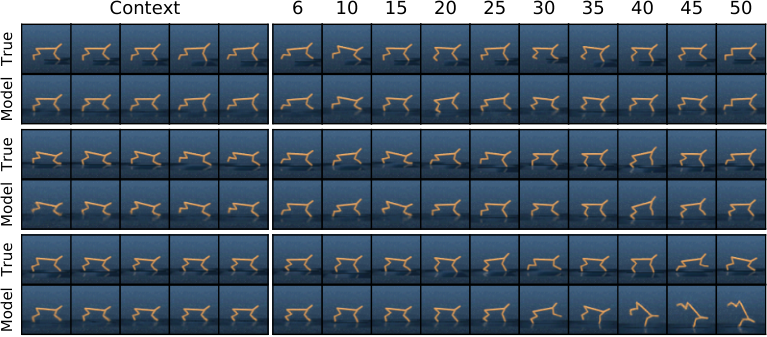
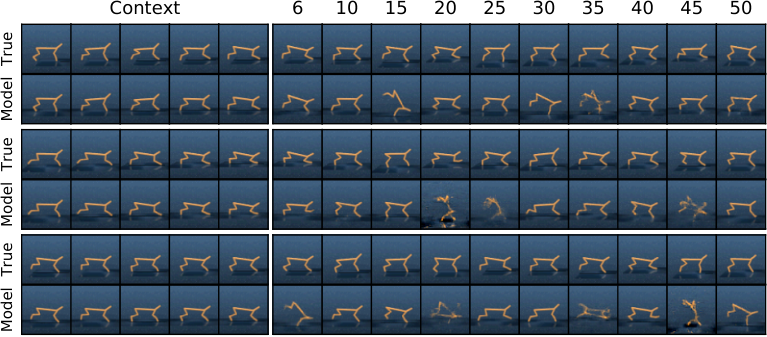
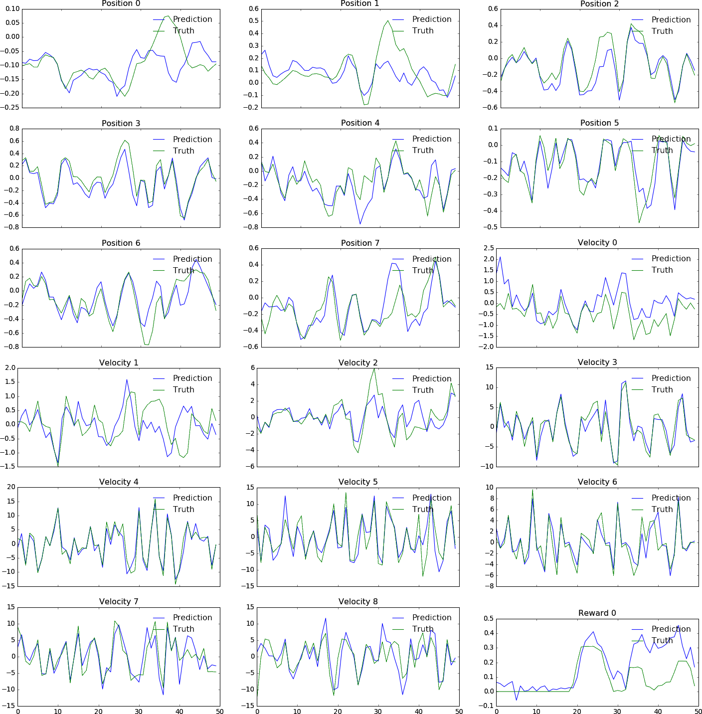

Learning Latent Dynamics for Planning from Pixels
原论文摘要 · English Abstract
Planning has been very successful for control tasks with known environment dynamics. To leverage planning in unknown environments, the agent needs to learn the dynamics from interactions with the world. However, learning dynamics models that are accurate enough for planning has been a long-standing challenge, especially in image-based domains. We propose the Deep Planning Network (PlaNet), a purely model-based agent that learns the environment dynamics from images and chooses actions through fast online planning in latent space. To achieve high performance, the dynamics model must accurately predict the rewards ahead for multiple time steps. We approach this using a latent dynamics model with both deterministic and stochastic transition components. Moreover, we propose a multi-step variational inference objective that we name latent overshooting. Using only pixel observations, our agent solves continuous control tasks with contact dynamics, partial observability, and sparse rewards, which exceed the difficulty of tasks that were previously solved by planning with learned models. PlaNet uses substantially fewer episodes and reaches final performance close to and sometimes higher than strong model-free algorithms.
编码器推断状态
从历史观测推断当前隐状态信念
CEM 采样候选序列
每步采样 1000 条候选动作序列
隐空间滚动评估
前向滚动隐动力学，累加预测奖励
执行首个动作
执行均值动作，模型预测控制
新观测重规划
根据新观测重新规划
问题与动机
规划在已知动力学的任务上早已大获成功，从围棋到模拟机器人控制都是例证；但一旦环境动力学未知，智能体就必须先从与世界的交互中把动力学学出来。学一个“准到能用来规划”的动力学模型是长期难题，尤其在图像域：模型误差会随预测步数累积、未来本身有多种可能、而模型在训练分布之外又常常过度自信。
此前的出路各有短板：低维状态空间的模型方法假设能直接看到系统真实状态、甚至假设奖励函数已知，这在现实中往往不成立；图像域的潜空间方法只解决过平衡杆子、控制双连杆手臂这类简单任务，而且奖励稠密；纯视频预测方法能生成逼真的未来帧，却不直接服务于决策。PlaNet 要回答的问题是：能否只从像素出发，学一个紧凑的隐空间动力学，并在其中做快速在线规划，去解决带接触动力学、部分可观测与稀疏奖励的连续控制任务？
论文的关键洞察是重新定义“模型好”的标准：规划并不需要模型重建出逼真的图像，只需要它能准确预测未来多步的奖励。因此模型设计与训练目标都应围绕“多步奖励预测的准确性”来组织，而不是围绕“像素重建的保真度”。这个判断贯穿了 RSSM 的结构选择与 latent overshooting 的目标设计，是理解整篇论文的钥匙。
- 规划在已知动力学下很强，但在未知环境中要先从交互中学动力学
- 图像域学动力学尤其难：误差累积、多未来、分布外过度自信
- 此前方法要么假设可见低维状态与已知奖励，要么只解决简单任务
- 核心洞察：规划只需要准确的多步奖励预测，不需要重建逼真图像
核心思想
PlaNet 是一个纯粹的模型智能体：它学习环境的动力学，然后通过在线规划选择动作——不学习策略网络，也不用价值网络。每个时间步，它先用编码器从历史观测中推断当前隐状态的信念，再用交叉熵方法在隐空间中搜索未来动作序列，执行其中第一步，然后根据新观测重新规划，即模型预测控制（MPC）。
规划完全在隐空间里进行，这是速度的关键。奖励被建模为隐状态的函数，因此评估一条候选动作序列只需要前向滚动隐动力学、累加预测奖励的均值，全程不生成图像；这让规划器每步能快速评估成千上万条候选序列。相比之下，在像素空间里做同样的搜索在计算上是不可行的。
支撑这一切的是两项设计。第一是 RSSM：把隐状态拆成确定性递推部分与随机采样部分，让模型既能记住长期信息、又能表达多种可能的未来。第二是 latent overshooting：一个多步变分目标，在隐空间中训练模型的多步预测能力，而不必付出解码图像的代价。两者共同服务于同一个目标——让多步奖励预测准到能支撑规划。
- 纯模型智能体：学动力学加在线规划，不学策略网络与价值网络
- 规划只在隐空间运行、不生成图像，因此能快速评估大量候选序列
- RSSM 以确定性加随机双通道兼顾长期记忆与多未来表达
- latent overshooting 在隐空间训练多步预测，不必解码图像
模型结构与关键机制
PlaNet 把环境看作部分可观测马尔可夫决策过程。真实环境的动力学由以下随机过程描述：
$$ \begin{aligned} s_t &\sim p(s_t \mid s_{t-1}, a_{t-1}) \\ o_t &\sim p(o_t \mid s_t) \\ r_t &\sim p(r_t \mid s_t) \end{aligned} $$
其中 $t$ 是离散时间步，$s_t$ 是环境的隐状态，$o_t$ 是图像观测，$a_t$ 是连续动作向量，$r_t$ 是标量奖励；论文用正体 $p$ 表示真实动力学、用斜体 $p$ 表示学到的模型。目标是实现一个策略 $p(a_t \mid o_{\leq t}, a_{ RSSM 是论文的模型核心，它把隐状态拆成两部分： $$
\begin{aligned}
h_t &= f(h_{t-1}, s_{t-1}, a_{t-1}) \\
s_t &\sim p(s_t \mid h_t) \\
o_t &\sim p(o_t \mid h_t, s_t) \\
r_t &\sim p(r_t \mid h_t, s_t)
\end{aligned}
$$ 这里 $f$ 是用 GRU 实现的循环神经网络，$h_t$ 是 200 维确定性递推状态，像记忆一样把全部历史信息无损地带到当前；$s_t$ 是 30 维对角高斯分布的随机状态，负责表达不确定性与多种未来；观测模型 $p(o_t \mid h_t, s_t)$ 是反卷积网络、奖励模型 $p(r_t \mid h_t, s_t)$ 是前馈网络。编码器 $q(s_t \mid h_t, o_t)$ 从当前观测与确定性状态推断滤波后验。 两个细节决定成败。第一，纯确定性 RNN 无法表达多未来、且容易被规划器利用其误差；纯随机状态空间模型则难以把信息可靠地记住几十步。消融实验表明随机部分更为关键——去掉它智能体完全学不会，部分原因是任务从智能体视角看是随机的（初始状态不可完全观测），采样噪声还给规划目标加了一层安全裕度。第二，所有关于观测的信息都必须经过编码器的采样步骤，绝不能有从输入到重建的确定性捷径，否则随机状态会被绕过、模型退化成确定性模型。 实现上，除 GRU 外的所有函数都是两层 200 维 ReLU 全连接网络，隐分布为 30 维对角高斯；图像先降到 5 比特位深，训练用 Adam、学习率 $10^{-3}$、批大小 $B=50$、序列长度 $L=50$，并给 KL 项留 3 个自由 nat（把散度损失截断在该值之下）。除动作重复外，全部六个任务共用同一套超参数。  训练用变分推断。由编码器出发，对观测序列的对数似然可得变分下界： $$
\ln p(o_{1:T} \mid a_{1:T}) \geq \sum_{t=1}^{T}\Big(\mathbb{E}_{q(s_t \mid o_{\leq t}, a_{ 第一项是重建项，即在编码器推断的后验下、模型重建当前观测的对数似然期望；第二项是复杂度项，即后验 $q(s_t \mid o_{\leq t}, a_{ 标准目标有个盲区：转移函数只通过每步的 KL 项接受训练，梯度从不穿过由多个转移串成的链条，因此模型只被要求“一步准”，而不被要求“多步准”。Latent overshooting 正是为此而生：先定义多步预测分布 $p(s_t \mid s_{t-d}) \triangleq \int \prod_{τ=t-d+1}^{t} p(s_τ \mid s_{τ-1}) \, ds_{t-d+1:t-1}$，即从 $d$ 步之前的状态出发、反复应用转移并积分掉中间状态得到的分布，其中 $d$ 是预测距离、$τ$ 是中间时间步；再把变分下界推广到所有距离 $1 \leq d \leq D$ 的平均： $$
\frac{1}{D}\sum_{d=1}^{D} \ln p_d(o_{1:T}) \geq \sum_{t=1}^{T}\Big(\mathbb{E}_{q(s_t \mid o_{\leq t})}[\ln p(o_t \mid s_t)] - \frac{1}{D}\sum_{d=1}^{D} β_d \, \mathbb{E}[\mathrm{KL}[q(s_t \mid o_{\leq t}) \parallel p(s_t \mid s_{t-1})]]\Big)
$$ 其中 $β_d$ 是各距离的权重系数（类比 $β$-VAE），$p_d$ 是 $d$ 步预测分布。关键是所有多步一致性约束都发生在隐空间：多步先验被拉向对应的后验，却不必解码任何图像；实践中对 $d>1$ 的距离截断后验的梯度，让多步预测去追赶“知情的”后验、而不是反过来。 推理侧是交叉熵方法（CEM）加 MPC。规划器维护一个随时间变化的对角高斯信念 $a_{t:t+H} \sim \mathcal{N}(μ_{t:t+H}, σ^2_{t:t+H}\mathbb{I})$，其中 $μ_{t:t+H}$ 是候选动作序列的均值、$σ^2_{t:t+H}$ 是方差、$H$ 是规划视野、$\mathbb{I}$ 是单位矩阵；从零均值单位方差出发，每轮采样 $J=1000$ 条候选序列、在模型中各用一条采样轨迹评估（把算力留给更多不同的序列）、取奖励最高的 $K=100$ 条重拟合信念，迭代 $I=10$ 次后执行当前步的均值 $μ_t$。收到新观测后，信念重新从零均值单位方差开始，以避免陷入局部最优。 外层是数据收集与模型训练交替的循环：先用 $S=5$ 个随机动作的种子回合建数据集，每 $C=100$ 次更新就用当前模型规划着收集一个新回合，动作加 $\mathcal{N}(0, 0.3)$ 的高斯探索噪声；每步动作重复 $R$ 次以缩短规划视野、给模型更清晰的学习信号，$R$ 因任务而异（摆起杆子为 $R=8$，到达、猎豹、接球为 $R=4$，手指旋转、行走为 $R=2$）。模型越准、收集的数据越好，数据越好、模型越准，这正是 PlaNet 的飞轮。  实验在 DeepMind Control Suite 的六个图像连续控制任务上进行，观测均为 $64\times64\times3$ 的第三人称相机图像：摆起杆子要求长视野与记住出画的小车，到达任务奖励稀疏，手指旋转涉及接触动力学，猎豹奔跑的状态与动作空间更大，接球只有接到球时才有稀疏奖励，行走要先站起来再走、还伴随与地面的碰撞。除动作重复外全部任务共用超参数，训练在单块 V100 上耗时 10 到 20 小时。 与无模型方法的对比是论文最亮眼的结果（详见结果图表，数字取自表 1）：100 个回合内，PlaNet 在全部任务上超过训练了 10 万个回合的 A3C；500 个回合后，基本追平用图像训练了 10 万个回合的 D4PG，只在手指旋转任务上例外；猎豹奔跑任务上 PlaNet 以 662 分超过 D4PG 的 524 分，相对提升约 26%。相对 D4PG 的数据效率增益在 40 到 500 倍以上。 模型设计的消融验证了 RSSM 的双通道：确定性部分让模型记住多步之前的信息，随机部分更为重要——没有它智能体根本学不会。智能体设计的消融同样清晰：在线数据收集对摆起杆子、手指旋转、行走是必需的，只靠随机动作收集数据会在这些任务上失败；CEM 的迭代精化在全部任务上都优于每步只采样一次的 random shooting。 附录还做了一个多任务实验：单个智能体同时学六个任务，不被告知当前是哪个任务、只能从图像中推断，六个任务全部解决、只是学习稍慢。这说明同一个 RSSM 能够跨域共享动力学知识，也为后来的多任务世界模型埋下伏笔。 以下数字全部取自论文表 1（5 个种子、10 条轨迹的均值最终性能）与正文第 5 节；数据效率增益为论文从 D4PG 训练曲线上估算的倍数，其中猎豹任务为 500 倍以上。 数字的核心信息是样本效率的数量级跃升：只用 1000 个回合，PlaNet 在 6 项任务中的 5 项上达到了 D4PG（10 万个回合）最终性能的 90% 以上，猎豹奔跑任务上 662 分对 524 分、反超约 26%，而且接近用真实仿真器做 CEM 规划的上界（猎豹 656 分、行走 994 分对 951 分）。更直观的是时间线：100 个回合内就超过训练了 10 万个回合的 A3C，500 个回合后基本追平 D4PG；相对 D4PG 的数据效率增益在 40 到 500 倍以上，其中猎豹任务超过 500 倍。这说明瓶颈从来不在“模型学不学得会”，而在“学到的模型能不能直接用来规划”。 消融对比把功劳分得很清楚：随机路径缺失时智能体完全学不会，确定性路径缺失则长期记忆类任务崩溃，两者缺一不可；在线数据收集对摆起杆子、手指旋转、行走这三项任务是必需的，只靠随机动作收集数据会失败；CEM 的迭代精化在全部任务上都优于只采样一次的 random shooting。单智能体六任务实验则说明同一个 RSSM 可以跨域共享，不被告知任务、仅凭图像就能区分并解决六个视觉迥异的任务，只是学习速度稍慢。 水分与局限也要点名：数据效率增益倍数是“从 D4PG 训练曲线上估算达到 PlaNet 最终性能所需的回合数”，并非严格的对照实验；A3C 的输入是本体感觉状态而非像素，模态并不完全对等；手指旋转任务 700 分对 985 分明显落后于 D4PG，说明 PlaNet 并非全面取胜。分数是 5 个种子、10 条轨迹的均值且未报告方差，而图 3 的 5 到 95 百分位区间在稀疏奖励任务上非常宽，个别任务结果的稳定性要打折扣；此外所有实验都在视觉简单的仿真环境中完成，真实机器人与高视觉多样性仍是未验证的外推。    最实在的局限是规划视野与算力。CEM 的视野只有 $H=12$ 步，视野之外的奖励没有任何价值函数来估计，智能体本质上是短视的；同时每步要评估 $J=1000$ 条序列、迭代 $I=10$ 次，推理成本远高于一次前向的策略网络。论文自己在未来工作里承认，学一个价值函数来估计视野之外的奖励、以及用基于梯度的规划提效，都是自然的下一步。 其次是动作重复 $R$ 这个手工旋钮：它在不同任务上取不同值（$R=2$ 到 $R=8$），是论文点名“重要”的超参数之一，等于把时间抽象这件事外包给了人工调参。后续工作用层级模型或可变时间步来取代固定动作重复，正是对这一局限的回应。 第三，latent overshooting 的理论与实践地位并不匹配。论文猜想多步预测分布是单步预测分布的下界（基于数据处理不等式），但这只是一个猜想而非定理；更关键的是附录 D 显示，overshooting 能显著提升 DRNN 等弱模型，却略微降低了最终 RSSM 的性能——最终版的智能体其实没有用它。一个标题级的贡献在最终系统里并非必需，这提醒读者区分“思想的价值”与“系统的必需”。 最后是评估范围：全部结果都在视觉简单的仿真环境中取得，作者也承认，不依赖重建的表征学习可能是通向高视觉多样性任务的关键一步。把 PlaNet 直接外推到真实机器人之前，还需要跨过视觉复杂性与模型误差在真实世界中被放大的两道坎。 PlaNet 最直接的遗产是 RSSM：它成了 Dreamer 系列的骨架。Dreamer 保留了确定性加随机的隐状态分解与隐空间想象，只是把“每步在线 CEM 搜索”换成“在想象轨迹上训练 actor-critic 策略”，从而同时解决了 PlaNet 的推理成本与短视问题。没有 PlaNet 先证明“隐动力学加规划”在复杂任务上走得通，Dreamer 的“隐动力学加想象中学习策略”就缺少立足点。 方法论上的遗产同样持久。第一，RSSM 确立了“确定性记忆加随机分支”作为隐世界模型的标准结构，之后的 DreamerV2、DreamerV3 与 TD-MPC2 等工作都在这个分解上做文章。第二，latent overshooting 把“多步一致性应该在隐空间里约束”的思想留了下来，后续的多步预测与一致性损失都能看到它的影子。第三，PlaNet 把评判模型的标尺从“像素重建得像不像”改成“多步奖励预测得准不准”，这个视角转换影响了整个世界模型领域的评估方式。 对今天的读者，PlaNet 的价值不只在结论、更在它提供的参照系：一个不学策略、不用价值函数、只靠模型加规划的智能体，到底能走多远、会在哪里撞墙。每当新的世界模型方法宣称进步时，都值得拿 PlaNet 的表 1 对照一下——样本效率提升了多少、代价是什么、以及那块“规划 vs 想象中学习策略”的取舍题，今天是否有了不同的答案。 思考题 1：为什么 PlaNet 宁愿每步花大力气在线做 CEM 规划，也不像 World Models 那样在模型里训练一个策略网络？在什么条件下，在线规划会输给“在想象中训练策略”？ 判断：在线规划是对的取舍，但它只在“规划便宜、视野够用”的条件下成立，长期看会被“在想象中训练策略”取代。PlaNet 每步用交叉熵方法评估 $J=1000$ 条候选动作序列、迭代 $I=10$ 次，算力换来的是不需要学策略网络、也不需要把奖励通过贝尔曼备份反向传播，100 个回合就超过训练了 10 万个回合的 A3C，而且模型与任务无关、换个奖励函数就能复用；但代价同样真实：每步都要重复这套搜索、规划视野只有 $H=12$ 步、视野之外的奖励完全没有价值函数来估计。后续 Dreamer 的做法恰恰补上了这一环——保留 PlaNet 的 RSSM 与隐空间想象，但把每步在线搜索换成在想象轨迹上训练一个 actor-critic 策略，执行时只需一次前向。所以结论是：PlaNet 证明了“模型加规划”这条路走得通，而 Dreamer 证明了把规划的结果蒸馏进策略里才能走得远、走得便宜。 思考题 2：RSSM 为什么必须同时保留确定性路径 $h_t$ 与随机路径 $s_t$？如果只保留其中一条，规划会在哪个环节出问题？ 判断：两者缺一不可，而且随机路径比确定性路径更关键，缺了它智能体根本学不会。纯确定性 RNN 的转移是单值的，无法表达“同一个状态下未来可能有多种走向”，规划器还会专门挑模型最自信、却最可能是错的动作序列去利用，等于在奖励模型误差；纯随机状态空间模型则相反，每个时间步都要重新采样，信息很难在几十步的时间尺度上可靠地保留下来，例如摆起杆子任务中小车一度移出画面，位置信息必须靠确定性记忆扛过去。论文的消融实验验证了这个分工：去掉随机部分后智能体在所有任务上都学不会，去掉确定性部分则长期记忆类任务明显崩溃；RSSM 把 200 维确定性递推状态 $h_t$ 与 30 维随机状态 $s_t$ 拼在一起，正是让记忆与不确定性各归其位。 思考题 3：Latent overshooting 在论文标题级贡献中占一席之地，但最终的 RSSM 智能体却并不需要它——这说明了什么？多步预测能力到底应该由模型结构保证，还是由训练目标保证？ 判断：这说明长期预测能力主要由模型结构保证，训练目标只是辅助，结构对了、目标可以省，结构错了、目标也救不回来。Latent overshooting 的想法是对的——标准变分目标只用 KL 项训练一步转移，梯度从不穿过多个转移组成的链条，所以多步预测天然不在训练目标的射程内；但 RSSM 本身已经通过确定性递推路径把长期信息显式地背了下来，多步一致性在结构上就已经近似满足，于是再加 overshooting 反而略微拖累了 RSSM 的性能，而对缺少确定性记忆的 DRNN 等弱模型，overshooting 的提升却非常显著。附录 D 的这个反差是最有价值的一课：它把“结构”与“目标”的贡献拆开了，结论是先修结构、再补目标；这也解释了为什么后续的 Dreamer 系列沿用了 RSSM，却没有把 latent overshooting 作为标配。 这是本系列第 2 篇，上一篇是 Ha 与 Schmidhuber 的《World Models》（2018），而 David Ha 本人也是 PlaNet 的作者之一，承继关系非常直接：两者共享“先学一个世界模型、再在模型里做决策”的路线，PlaNet 附录 A 明确说明其卷积与反卷积网络沿用 World Models 的设计。但分歧同样根本。World Models 的做法是在学好的模型中用 CMA-ES 训练一个策略网络，模型训练与策略训练是分离的两阶段，且模型是纯随机的 MDN-RNN；PlaNet 则彻底抛弃策略网络与价值网络，改用每步在线的 CEM 规划加 MPC，并在“用规划收集数据”与“用数据训练模型”之间交替迭代。模型上，PlaNet 把纯随机的 MDN-RNN 换成确定性加随机双通道的 RSSM，并引入多步变分目标 latent overshooting 来解决长期预测问题。一句话：World Models 证明了“世界模型可以学出来”，PlaNet 证明了“世界模型可以直接拿来规划，而且比学策略更省样本”——这一步把 world model 从“策略训练的模拟器”变成了“决策本身的推理引擎”，也正是 Dreamer 系列此后沿用的范式。训练与推理流程
实验与结果
实验结果 · 数据
最终性能：PlaNet vs D4PG vs 真实动力学 CEM（表 1，6 项任务均值）
任务 PlaNet（1000 回合） D4PG（100000 回合） CEM + 真实仿真器（上界） Cartpole Swing Up 821 862 850 Reacher Easy 832 967 964 Cheetah Run 662 524 656 Finger Spin 700 985 825 Cup Catch 930 980 993 Walker Walk 951 968 994 PlaNet（1000 回合）
D4PG（100000 回合）
CEM + 真实仿真器（上界）
相对 D4PG 的数据效率增益（倍，表 1）
项目 数值（倍） Cartpole Swing Up 250 Reacher Easy 40 Cheetah Run（500+ 倍） 500 Finger Spin 300 Cup Catch 100 Walker Walk 90 局限与争议
为什么今天还重要
关键术语
思考题
查看参考答案
查看参考答案
查看参考答案
谱系与位置
我的笔记